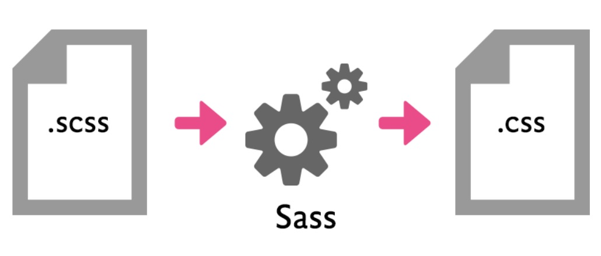
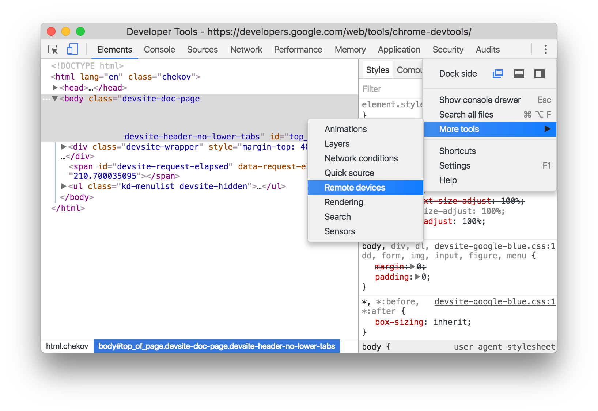

Отладка CSS в боевых условиях

Никита Дубко, разработчик интерфейсов
Приходит к вам тестировщик...
«У нас критический баг ...
... в очень важной функции.
Релиз сегодня».
Алгоритм решения проблемы
- подобрать решение;
- закоммитить;
- отдать тестировщику.
Хороший алгоритм решения проблемы
- воспроизвести проблему;
- локализовать ошибку;
- исправить ошибку;
- протестировать;
- избежать повторения в будущем;
- отдать тестировщику.
Фигура первая.
Рабочая
Десктоп, популярный браузер
У ссылок пропали выделения по фокусу.
Ваш тестировщик
Вы стараетесь делать хорошо, у вас...
- на все взаимодействия есть визуальные зацепки;
- выделение по умолчанию сброшено;
- но взамен установлено красивое, дизайнерское.
Алгоритм решения проблемы
- воспроизвести проблему;
- локализовать ошибку;
- исправить ошибку;
- протестировать;
- избежать повторения в будущем;
- отдать тестировщику.
Инструменты разработчика
- Ctrl + Shift + I
- ⌘ + ⌥ + I
- F12
Включение состояний
Алгоритм решения проблемы
- воспроизвести проблему;
- локализовать ошибку;
- исправить ошибку;
- протестировать;
- избежать повторения в будущем;
- отдать тестировщику.
style.scss
%outline {
outline: 0;
box-shadow: 0 0 1px 2px $color_outline;
background-color: $color_link;
color: $color_background;
}
.link:focus {
@extend %outline;
}
Увеличиваем специфичность
Было:
Стало:
.link.link.link[class].link:not(.foo).link:not(#foo)
http://specificity.keegan.st
Специфичность не помогла :(
Как хорошо –≤—ã –∑–Ω–∞–µ—Ç–µ CSS? üë®ü躂Äçüè´
Даны следующие классы:
.red { color: red; }
.blue { color: blue; }
Какого цвета должны быть эти дивы?
<div class="red blue">
<div class="blue red">
https://twitter.com/mxstbr/status/1038073603311448064
http://css-live.ru/css/nikto-ne-znaet-css-specifichnost-ne-kaskad.html
Приоритетность стилей (по убыванию)
- Стили во время CSS-переходов (transition)
- Браузерные стили с
!important
- Пользовательские стили с
!important
- Авторские стили с
!important
- Стили во время анимаций
- Обычные (т.е. без
!important) авторские стили
- Обычные пользовательские стили
- Обычные браузерные стили
Браузерные стили
style.scss
%outline {
outline: 0;
box-shadow: 0 0 1px 2px $color_outline !important;
background-color: $color_link !important;
color: $color_background;
}
.link:focus {
@extend %outline;
}
!important не помог :(
Source maps
https://github.com/ryanseddon/source-map/wiki/Source-maps:-languages,-tools-and-other-info

style.css.map
{"version":3,"file":"style.css","sources":["style.scss","imports/reset.css"],"sourcesContent":["@import './imports/reset';\n\n$color_outline: hsl(210, 89%, 40%);\n$color_link: hsl(210, 89%, 40%);\n$color_background: white;\n\n%outline {\n outline: 0;\n box-shadow: 0 0 1px 2px $color_outline;\n background-color: $color_link;\n color: $color_background;\n}\n\n.link:focus {\n @extend %outline;\n}","/* http://meyerweb.com/eric/tools/css/reset/ */\n/* v1.0 | 20080212 */\n\nhtml, body, div, span, applet, object, iframe,\nh1, h2, h3, h4, h5, h6, p, blockquote, pre,\na, abbr, acronym, address, big, cite, code,\ndel, dfn, em, font, img, ins, kbd, q, s, samp,\nsmall, strike, strong, sub, sup, tt, var,\nb, u, i, center,\ndl, dt, dd, ol, ul, li,\nfieldset, form, label, legend,\ntable, caption, tbody, tfoot, thead, tr, th, td {\n\tmargin: 0;\n\tpadding: 0;\n\tborder: 0;\n\toutline: 0;\n\tfont-size: 100%;\n\tvertical-align: ...
Пример включения для gulp
const
sass = require('gulp-sass'),
sourcemaps = require('gulp-sourcemaps');
gulp.task('build:scss', function () {
return gulp
.src('path/to/scss')
.pipe(sourcemaps.init())
.pipe(sass())
.pipe(sourcemaps.write('.'))
.pipe(gulp.dest('path/to/css'));
});
reset.css:37
https://meyerweb.com/eric/tools/css/reset/reset200802.css
/* remember to define focus styles! */
:focus {
outline: 0;
}
Дебаг препроцессорного кода
https://www.sitepoint.com/using-sass-error-warn-and-debug-directives/
В SASS есть отладочные директивы:
style.scss
%outline {
outline: 0;
box-shadow: 0 0 1px 2px $color_outline;
background-color: $color_link;
color: $color_background;
}
.link:focus {
@extend %outline;
@debug $color_outline;
}
style.scss:10: DEBUG: hsl(210, 89%, 40%)
style.scss
%outline {
outline: 0;
box-shadow: 0 0 1px 2px $color_outline;
background-color: $color_link;
color: $color_background;
@debug $color_outline;
}
.link:focus {
@extend %outline;
}
style.scss:6: DEBUG: hsl(210, 89%, 40%)
style.css
.link:focus,
.button_type_ghost:focus,
.title:focus,
.popup__button:not(.popup .popup__button_disabled):focus,
.menu__item:focus,
/* ... */
.more__button:focus {
outline: 0;
box-shadow: 0 0 1px 2px #0b66c1;
background-color: #0b66c1;
color: #fff;
}
style.css
.link:focus,
.button_type_ghost:focus,
.title:focus,
.popup__button:not(.popup .popup__button_disabled):focus,
.menu__item:focus,
/* ... */
.more__button:focus {
outline: 0;
box-shadow: 0 0 1px 2px #0b66c1;
background-color: #0b66c1;
color: #fff;
}
:not
https://www.w3.org/TR/selectors-3/#negation
- сам по себе не увеличивает специфичность селектора;
- принимает внутрь себя простой селектор;
- может содержать вложенный
:not.
Простой селектор
https://www.w3.org/TR/selectors-3/#simple-selectors
- селектор типа:
h1;
- универсальный селектор:
*;
- селектор атрибута:
[href];
- селектор класса:
.link;
- ID-селектор:
#header;
- псевдокласс:
:visited;
- пустой селектор:
:not(.popup .popup__button_disabled)
Алгоритм решения проблемы
- воспроизвести проблему;
- локализовать ошибку;
- исправить ошибку;
- протестировать;
- избежать повторения в будущем;
- отдать тестировщику.
Правильный селектор
Было:
.popup__button:not(.popup .popup__button_disabled):focus {
@extend %outline;
}
Стало:
.popup__button:not(.popup__button_disabled):focus {
@extend %outline;
}
Алгоритм решения проблемы
- воспроизвести проблему;
- локализовать ошибку;
- исправить ошибку;
- протестировать;
- избежать повторения в будущем;
- отдать тестировщику.
После исправления
Алгоритм решения проблемы
- воспроизвести проблему;
- локализовать ошибку;
- исправить ошибку;
- протестировать;
- избежать повторения в будущем;
- отдать тестировщику.
Принятые решения
- отказаться от
@extend
в пользу
@mixin;
- сделать класс вроде
.custom-focus;
- отказаться от устаревшего
reset.css.
Советы
- Проверяйте сборку.
- Знайте свои инструменты.
- Настройте линтеры.
Фигура вторая.
Печальная
Смартфон, популярная ОС
На iOS в любом браузере при скролле блок становится невидимым.
Ваш тестировщик
Алгоритм решения проблемы
- воспроизвести проблему;
- локализовать ошибку;
- исправить ошибку;
- протестировать;
- избежать повторения в будущем;
- отдать тестировщику.
Алгоритм решения проблемы
- воспроизвести проблему;
- локализовать ошибку;
- исправить ошибку;
- протестировать;
- избежать повторения в будущем;
- отдать тестировщику.
Отладка мобильного устройства
- в эмуляторе;
- на реальном устройстве.
Эмуляторы
- VirtualBox
- Vagrant
- Parallels
- Xcode
- Android Studio
- ...
Подключаем Android для дебага
https://developers.google.com/web/tools/chrome-devtools/remote-debugging/

Подключаем iOS для дебага
- Safari
- ios-webkit-debug-proxy
Правильная вёрстка и стили
- Валидатор W3C
- CSSTree
https://validator.w3.org/
https://csstree.github.io/docs/
animation: ease ease-in-out 2s 2s;
https://csstree.github.io/docs/syntax.html
https://www.youtube.com/watch?v=7-qUm-N_fyA
В стабильных браузерах есть баги
https://bugs.webkit.org/buglist.cgi?product=WebKit&resolution=---
-webkit-overflow-scrolling: touch
https://developer.mozilla.org/en-US/docs/Web/CSS/-webkit-overflow-scrolling
Шаг 3. Исправить
- Вынести на новый графический слой.
- Отказаться от использования
-webkit-overflow-scrolling.
- Переверстать без бага.
- Костыль на JavaScript.
Вынести на новый графический слой
transform: translateZ(0)will-change: transformfilter: invert(100%) invert(100%)opacity: 0.9999999
Containing block
- для
position: absolute формируется по краям padding box
ближайшего родителя, у которого position не static;
- для
position: absolute или position: fixed
также может формироваться по краям padding box ближайшего родителя, у которого:
transform не равен none;perspective не равен none;will-change: transform или will-change: perspective;filter не равен none.
https://developer.mozilla.org/en-US/docs/Web/CSS/Containing_block
И что нам делать?
Очень странное решение
.gallery__item {
animation-name: scroller-overflow-hack;
animation-fill-mode: forwards;
animation-duration: 1ms;
}
@keyframes scroller-overflow-hack {
0% { opacity: .9999; }
100% { opacity: 1; }
}
Шаг 5. Избежать повторения в будущем
- Добавить тесты скриншотами.
- Добавить в сборщик
@warn или @error на использование нестабильных
свойств.
Тестирование скриншотами
Советы
- По возможности не используйте нестабильные свойства.
- Тестируйте на реальных устройствах.
- Знайте спецификацию.
Фигура третья.
Разлучная
UC Browser, Nokia 6300
В UC Browser на Nokia 6300 не работает шапка сайта.
Ваш тестировщик
Целевой рынок
Самые продаваемые смартфоны, Китай (2017)
http://mobile.zol.com.cn/657/6570496.html
- Honor8 32GB
- iPhone7 Plus 32GB
- Vivo X9 64GB
- Huawei Mate9 32 GB
- Oppo RII 64GB
- Samsung Galaxy S8 64GB
- Honor V9 64GB
- Oppo R9S Plus 64 GB
- Gionee M2017 128 GB
- Moto Z 65 GB
Шаг 1. Воспроизвести
Но как жить без инструментов разработчика?
FireBug
https://en.wikipedia.org/wiki/Firebug_(software)
всего 12 лет назад
firebug lite
https://getfirebug.com/releases/lite/1.2/
скриншот
Шаг 2. Локализовать
- собрать демо
- запустить демо на устройстве
- отключить потенциально проблемные стили
- goto 1
Немного веселья
Отладка слоёв #1
https://medium.freecodecamp.org/heres-my-favorite-weird-trick-to-debug-css-88529aa5a6a3
*:not(path):not(g) {
color: hsla(210, 100%, 100%, 0.9) !important;
background: hsla(210, 100%, 50%, 0.5) !important;
outline: solid 0.25rem hsla(210, 100%, 100%, 0.5) !important;
box-shadow: none !important;
}
Отладка слоёв #2
https://habr.com/post/65009/
* { outline: 2px dotted red; }
* * { outline: 2px dotted green; }
* * * { outline: 2px dotted orange; }
* * * * { outline: 2px dotted blue; }
* * * * * { outline: 1px solid red; }
* * * * * * { outline: 1px solid green; }
* * * * * * * { outline: 1px solid orange; }
* * * * * * * * { outline: 1px solid blue; }
https://github.com/nternetinspired/debug-css
Как понять, что класс есть на странице?
- JavaScript
- CSS image
-
background-image: url('/api/check?s=.my-class')
-
list-style-image: url('/api/check?s=.my-class')
-
content: url('/api/check?s=.my-class')
- ...
Помните про псевдоэлементы
.link {
position: relative;
}
.link:before {
content: '.link';
color: red;
}
.link:after {
content: '';
position: absolute;
left: 0; top: 0; right: 0; bottom: 0;
border: 1px solid red;
}
Используйте div и span
- У некоторых HTML5-элементов есть предопределённые стили.
- Некоторые браузеры не умеют HTML5.
Шаг 3. Исправить
... может быть критически дорого.
Пример наплевательства
https://github.com/google/material-design-lite
https://github.com/google/material-design-lite/issues/4524
Советы
- Если важно — делайте отдельную лёгкую версию сайта.
- Используйте прогрессивное улучшение.
- Всегда проверяйте совместимость внешних библиотек с вашим стеком браузеров.
- Мыслите нестандартно.
Для размышления
- Верстать не сложно. Сложно верстать правильно.
- Ваш сайт могут открыть даже на холодильнике.
- Упасть может что угодно.
- Пользователь не должен страдать из-за лени разработчика.
- Знайте свои инструменты.